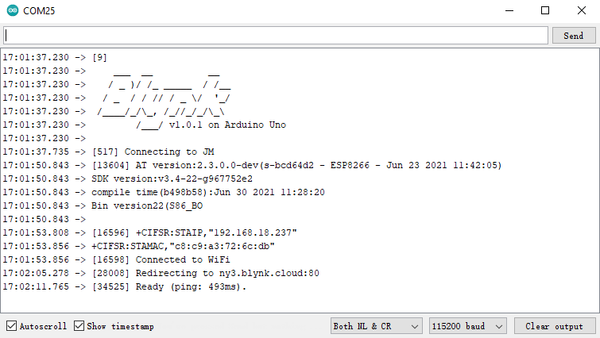

注釈
こんにちは、SunFounderのRaspberry Pi & Arduino & ESP32愛好家コミュニティへようこそ！Facebook上でRaspberry Pi、Arduino、ESP32についてもっと深く掘り下げ、他の愛好家と交流しましょう。
参加する理由は？
エキスパートサポート：コミュニティやチームの助けを借りて、販売後の問題や技術的な課題を解決します。
学び＆共有：ヒントやチュートリアルを交換してスキルを向上させましょう。
独占的なプレビュー：新製品の発表や先行プレビューに早期アクセスしましょう。
特別割引：最新製品の独占割引をお楽しみください。
祭りのプロモーションとギフト：ギフトや祝日のプロモーションに参加しましょう。
👉 私たちと一緒に探索し、創造する準備はできていますか？[ここ]をクリックして今すぐ参加しましょう！
1.4 R4ボードをBlynkに接続する
ESP8266モジュールとR4ボードを再接続します。ここではソフトウェアシリアルが使用されているため、TXとRXはそれぞれR4ボードの2ピンと3ピンに接続されます。
注釈
ESP8266モジュールは安定した動作環境を提供するために高電流を必要とします。9Vのバッテリーが接続されていることを確認してください。

ultimate-sensor-kit\iot_project\wifi\00-Blynk_quick_startパスの下にある00-Blynk_quick_start.inoファイルを開くか、このコードを Arduino IDE にコピーします。Device info ページからコピーできる以下の三行のコードを置き換えます。これにより、R4ボードがあなたのBlynkアカウントを見つけられるようになります。
#define BLYNK_TEMPLATE_ID "TMPLxxxxxx" #define BLYNK_DEVICE_NAME "Device" #define BLYNK_AUTH_TOKEN "YourAuthToken"

使用中のWiFiの
ssidとpasswordを入力します。char ssid[] = "ssid"; char pass[] = "password";
コードをR4ボードにアップロードし、シリアルモニターを開いてボーレートを115200に設定します。R4ボードがBlynkと正常に通信すると、シリアルモニターには
readyと表示されます。
注釈
ESP is not respondingというメッセージが表示された場合は、以下の手順に従ってください。9Vのバッテリーが接続されていることを確認します。
RSTピンを1秒間GNDに接続してESP8266モジュールをリセットし、その後、外します。
R4ボードのリセットボタンを押します。
これらの操作を3〜5回繰り返す場合があります。気長に試してください。
Blynkのステータスが offline から online に変わります。